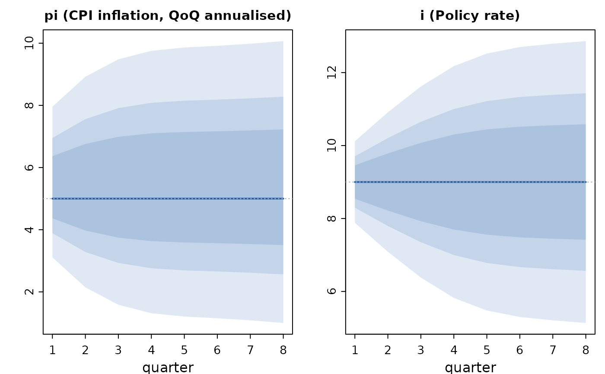

Central banks rarely believe their fan charts are symmetric: the
published judgement is usually "risks to inflation are tilted to the
upside". qpm_risk() applies that judgement, replacing the Gaussian
bands of a forecast with two-piece normal bands whose mode stays on
the model's projection while the mean shifts by the stated skew.
Total uncertainty is preserved: the variance implied by the model at
each horizon is held fixed, so a skew redistributes risk rather than
adding it.
Value
The forecast with skewed bands. $risk records the skews and
$paths gains a mode column alongside mean.
Details
The skew is stated in the variable's own units as mean minus mode —
a value of 0.3 on inflation means the risks are worth 0.3
percentage points to the upside. Skews may be given for any subset of
variables and horizons; anything unstated keeps symmetric bands.
Unlike add_judgment(), which moves the projection itself and
back-solves the shocks that support it, this changes only the shape of
the distribution around an unchanged central path.
Examples
sol <- qpm_solve(qpm_template("bkl"))
fc <- qpm_forecast(sol, horizon = 8)
risky <- qpm_risk(fc, pi = 0.4, author = "MPC",
rationale = "energy prices tilted to the upside")
risky
#> <qpm_forecast> Canonical small open economy QPM (BKL, stationary trends) - 8 quarters ahead (h1 ... h8)
#> mean (90% band) at h = 1, 4, 8:
#> y_gap 0 (-1.07, 1.07) 0 (-1.63, 1.63) 0 (-2.4, 2.4)
#> pi 5.4 (3.11, 7.96) 5.4 (1.31, 9.75) 5.4 ( 1, 10.1)
#> pi4 5 (4.39, 5.61) 5 (2.05, 7.95) 5 (1.31, 8.69)
#> i 9 (7.88, 10.1) 9 (5.82, 12.2) 9 (5.14, 12.9)
#> r 4 (2.28, 5.72) 4 (1.75, 6.25) 4 (0.78, 7.22)
#> r_gap 0 (-1.72, 1.72) 0 (-2.24, 2.24) 0 (-3.24, 3.24)
#> q 0 (-3.37, 3.37) 0 (-4.51, 4.51) 0 (-4.94, 4.94)
#> q_gap 0 (-3.37, 3.37) 0 (-4.47, 4.47) 0 (-4.87, 4.87)
#> q_bar 0 (-0.49, 0.49) 0 (-0.85, 0.85) 0 (-1.02, 1.02)
#> r_bar 4 (3.67, 4.33) 4 (3.43, 4.57) 4 (3.32, 4.68)
#> dy_obs 3.5 (-1.11, 8.11) 3.5 (-2.03, 9.03) 3.5 (-2.53, 9.53)
#> dy_bar 3.5 (3.17, 3.83) 3.5 (2.97, 4.03) 3.5 ( 2.9, 4.1)
#> ystar_gap 0 (-0.49, 0.49) 0 (-0.75, 0.75) 0 (-0.81, 0.81)
#> istar 3 (2.51, 3.49) 3 ( 2.2, 3.8) 3 ( 2.1, 3.9)
#> pistar 2 (1.18, 2.82) 2 (0.88, 3.12) 2 (0.85, 3.15)
#> rstar 1 (0.24, 1.76) 1 (-0.12, 2.12) 1 (-0.21, 2.21)
#> prem 3 (2.18, 3.82) 3 (1.67, 4.33) 3 ( 1.5, 4.5)
#> balance of risks: 8 entries on pi (see risk_log())
#> bands are two-piece normal; the central line is the mode
plot(risky, vars = c("pi", "i"))
